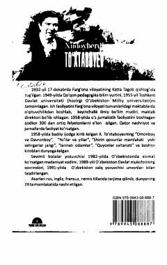

SDHoshimjonning qiziqarli sarguzashtlari va hayotiy saboqlari tasvirlangan mashhur asar.
Ushbu asar taniqli o'zbek yozuvchisi Xudoyberdi To'xtaboyevning mashhur romanlaridan biridir. Kitobda bosh qahramon Hoshimjonning qiziqarli sarguzashtlari, uning hayotiy xatolari va to'g'ri yo'l izlashi yumoristik ruhda tasvirlangan. Asar yosh kitobxonlarga saboq beruvchi qiziqarli voqealarga boy.